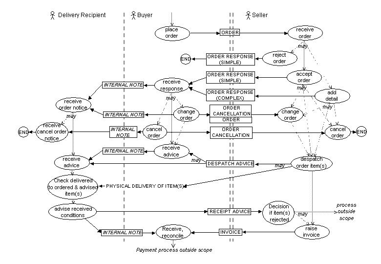
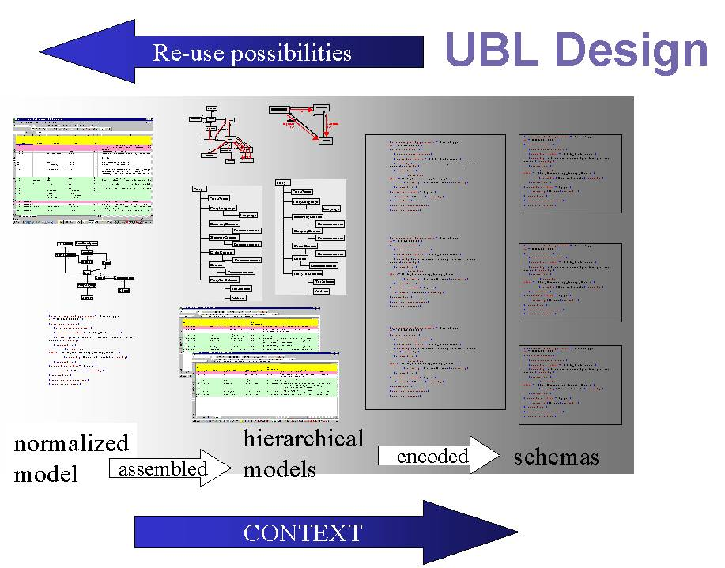

The Universal Business Language (UBL) Library is:
The Library has been designed as a collection of object classes and associations expressed as a conceptual model. Specific document types are then assembled from these business information entities (BIES) by organizing them into a specific hierarchy. These hierarchical models are then transformed using the UBL Naming and Design rules [NDR] into XML Schema syntax [XSD1][XSD2]. The analysis and design processes developed by the UBL Library Content team are described in Annex A.
The UBL library is intended for use in business data contexts beyond the specific set of document types provided in this specification. For the purposes of this release, Section 5 below describes the scenario and choreography used in developing this set of documents. For example, the document Order Response may have a limited application, but the re-usable components Party and Item will have relevance to many applications.
The OASIS UBL Technical Committee invite interested parties to comment on this release directly to the Library Content Subcommittee Editor, Bill Meadows using the recommended feedback form, UBL_Comment-0p1.rtf.
This release comment period applies from Monday, January 27th until Monday, April 14th 2003. We welcome your comments and will ensure to advise you of our dispositions to any suggestions.
This document and its associated components are Copyright © 2003 OASIS and are protected by applicable law as works in progress within the OASIS Universal Business Language Technical Committee. As works in progress, they do not yet have the status of an OASIS Standard or an OASIS Committee Specification. This draft and its associated components are provided on a royalty-free basis and may be freely circulated for purposes of experimentation and review. While the construction of experimental prototypes based on these materials is encouraged for the purpose of generating input back to the committee process, implementers are strongly advised against basing commercial or mission-critical applications on the draft specifications contained in this package. THESE MATERIALS ARE FURNISHED WITH NO WARRANTY, EXPRESS OR IMPLIED, AS TO THEIR SUITABILITY FOR ANY APPLICATION.
The Library Content part of UBL specifies a library of business information entities to be used in the construction of business documents together with a set of common XML business documents assembled from those entities.
This document contains normative and non-normative references used by UBL: the context scenario and business rules used to construct the business models and business documents; and the schema instances of the business documents.
The annexes include the modeling approach used in the normalized model and document descriptions.
The terms Core Component and Business Information Entity are used in this specification with the meanings given in [CCTS].
The terms Object Class, Property, Representation Term, and Qualifier are used in this specification with the meanings given in [ISO11179].
The specific context adopted for UBL release 0p70 is based on a typical trading cycle. This section describes the scenario and choreography as well as highlighting some of the business rules used in developing this set of documents.
The design of this particular set of UBL documents also allows it to be used as a basis for extension to create more function-rich, but separately defined, scenarios. When that occurs, it is expected that this section will become one of a list of ALL available Scenarios from different, complementary sources. Such a list and descriptions need to be constructed in such a way that a newcomer will be able to readily identify the scenario that exactly, or most closely, fits their requirement and manner of operation.
This model addresses the requirements of a basic, usable trading cycle from Order to Invoice between Buyer and Seller. It includes specifications for:
It provides for:
It does not provide for:
Different business scenarios to meet different ways of trading cycle operation can, and should, be developed by separate, appropriate teams of business and modelling experts. Ideally they should take advantage of the basic UBL model as a starting point and as an exemplar. They will then need to go through an independent harmonisation review to encourage and to ensure inter-operability, to reduce ambiguity, and to avoid unnecessary overlap.
Suggested other scenarios, for separate development, include situations of:
Other scenarios that are already in development and that should be included in the catalogue of business scenarios include:
Editors' Notes:
It is expected that each of the above suggestions will become at least one separate scenario with a carefully defined scope that describes what the scenario does and does not cover.
It is also expected that wherever possible as much of each model and 'document' will be as common in design as is possible.
It is also expected that there will be a carefully judged balance between, on the one hand, having too many separate and different scenarios and, on the other hand, too few generic 'all-things-to-all-folks' scenarios.
Items are ordered by the Buyer from the Seller. The Buyer and Seller may be in the same country, or in different countries. The Seller confirms with either an Order Response (simple), or an Order Response (complex) if it is necessary to provide the Buyer with additional information. The Seller fulfils the order by sending a Despatch Advice and supplying the items requested. The Buyer returns a Receipt Advice to confirm items have been received. The Seller invoices the items that have been provided. The Buyer reconciles the invoice to the despatch advice and order, and makes a payment which covers one or more invoices within the payment period defined in the invoice payment terms.

Figure 1. Trade Cycle
In the simplest of cases, it is anticipated that there will be no need to change order details. Complete cancellation may be allowed. The Buyer may indicate potential substitutes that are acceptable; the Seller may advise substitutes which will be made, or changes necessary, using the Order Response (complex).
The Order can subsequently be modified by the Buyer cancelling the original Order and replacing it with a new Order.
The Order may specify Charge Payment (e.g. freight, documentation etc) instructions that identify the type of charge and who pays which charges. The Order can be placed 'on account' against a trading credit account held by the Seller, or against a credit/debit card account, or a direct debit agreement. The Order overall allows only for specification of Currency (e.g. £, $, € etc by ISO currency code) for Pricing, for Invoice presentation, for Tax accounting. In the case of International freight/documentation charges, it may also be necessary to specify the Currency.
Trade discount may be specified at Order Header level. The Buyer may not know the trade discount, in which case it is not specified. This makes a detailed Order Response (complex) necessary [See Order Response (Complex)].
The Order may specify delivery terms and constraints that apply for the delivery location in relation to the following information that would normally not appear until the Despatch Advice:
The Order provides for multiple Order Item Lines.
Each Order Item Line provides for specification of a single place of delivery, and a schedule of quantities and requested delivery dates.
The Order may specify delivery terms, while the Order Item Line may provide instructions for delivery. Partial shipment indication is also allowed, insofar as the only information needed is a yes/no 'partial shipment allowed' indicator for each Order Item Line.
For each Order Item Line, an Allowable Substitute can be included. The substitute item may be specified by any one of the range of Item identifiers. The specified Quantity may change e.g. 20x6-packs substituting for 10x12-packs.
An Item Identifier identifies each Item (e.g. a product identifier), which shall be one of the following:
The Item Identification assumes that each different packaging of an Item (e.g. a 6-pack and a 12-pack of the same item) has a different Item Identifier.
The Item may be further distinguished by the specification of Measurement(s) or Physical Attribute(s). This enables specification of the following kinds of item:
This is an item that is not identified by an unambiguous, machine processable, product code and where it is necessary to provide additional descriptive information about the item to precisely identify what is required.
This is an item that the customer describes according to his need, and in the specification of which the customer may make some reference to comparable "standard" items.
This is an item in which it is necessary to specify one or more measurements as part of the descriptive specification of the item.
For an Item, price ranges by amount, quantity, etc. are not repeated back to the Seller; only the active price is specified. The Buyer may not know the Item Price, in which case it is not specified. This makes a detailed Order Response (complex) necessary [See Order Response (Complex)].
Ordered items may include Hazardous Material items, insofar as it is not necessary to specify related information at the order stage. The Buyer may not be aware of the nature of the Item. Indication of the Hazardous nature of the Item, and any relevant information, would be indicated in the Despatch Advice.
The Order Response (simple) is the means by which the Seller confirms receipt of the Order, indicating commitment to fulfill without change, to the Buyer. The Seller may also inform the Buyer, using this Order Response, that the Order has been rejected.
The Order Response (complex) is a complete replacement of the Order. It also is the means by which the Seller confirms or supplies Order-related details to the Buyer that were not available to, or specified by, the Buyer at the time of ordering. These may include:
The Buyer can change an Order, subject to the legal contract or trading partner agreement, by sending an Order Cancellation followed by a new, complete replacement, Order.
Buyers can initiate a change to a previously accepted order. Buyers may change an order for various reasons such as changing the ordered items, quantity, delivery date, ship-to address, etc. Suppliers can accept or reject the change order using the order response document.
Changes by the Seller would be accomplished through the OrderResponse (Complex).
At any point of the process, a Buyer can cancel an order sent to a Seller. Legal contracts, trading partner agreements and business rules would restrict at what point a Order Cancellation would be ignored (e.g. at the point of manufacture or delivery process initiation). Given the agreements and rules, an Order Cancellation may or may not be an automated business transaction. The terms and conditions of a contract formation for business commitments will dictate what if any of these restrictions and/or guidelines will apply.
As described in the Order, the Item Identification within each Item Line may be made by the Buyer's, Seller's, Manufacturer's, or Catalogue identification of the item, or by an identification assigned by a Standards organisation. It may also be accompanied by an indication of the Country of Origin for the Item. Indication of the Hazardous nature of the Item, and any relevant information, would be indicated in the Despatch Advice.
The following information may appear in the Despatch Advice:
The Despatch Advice caters for two situations:
Additionally, in either case, the Despatch Advice can advise:
Note: Item Lines of the Despatch Advice may not correspond one-to-one with Order Item Lines, but each needs to be linked by reference to the Order Item Line Id. The information structure of the Despatch Advice, geared to physical considerations, may result in multiple Despatch Advice Item Lines from one Order Item Line. Equally, partial despatch may result in some Order Item Lines not being matched by any Item Line in a Despatch Advice.
The Receipt Advice is sent by the Receiver (Buyer) to the Seller to confirm receipt of items, and is capable of reporting shortages and/or damaged items.
The Receipt Advice caters for two situations. For ease of processing claimed receipt against claimed delivery, it needs to be organised in the same way as the matching Despatch Advice:
The Receipt Advice allows the Receiver to state any shortages from the claimed despatch quantity, to state any quantities rejected for a reason which is given, and also to indicate cancellation of any 'to follow' quantity advised by the Ship From or Seller party.
Note: As presently arranged the Receipt Line only allows for one rejection quantity and reason. However, any rejection of quantities of same item for different reasons could be achieved by subdividing the Receipt Line so that there are multiple Receipt Lines to one Despatch Line. (How sophisticated, or precise, do you want the reason for rejection to be? Advising the supplier over the phone is generally more expressive than an electronic message!)
The Invoice is normally issued on the basis of ONE despatch event triggering ONE invoice. An Invoice may also be issued for pre-payment on a whole or partial basis. The possibilities are:
The invoice only contains the information that is necessary for invoicing purposes. It does not re-iterate information already established in the Order, Order Response (complex), Despatch Advice, or Receipt Advice that is not necessary when invoicing. The Invoice refers to the Order, Order Response (complex), Despatch Advice or Receipt Advice by the Identifier of those documents.
Taxation on the Invoice allows for Compound Taxes, the sequence of calculation implied by the sequence of information repeated in the data-stream. (e.g., Energy tax, with VAT — Value Added Tax — superimposed).
Charges can be specified either as a lump sum, or by percentage applied to the whole Invoice value prior to calculation of taxes. Such charges cover:
The present Invoice does not cover Debit and Credit Notes. Nor does the cycle include a Customer Account Statement that summarises Invoices, Credit Notes and Debit Notes to be paid.
Each Invoice Item Line refers to the related Order Item Line and may refer to the Despatch Advice Item Line and/or Receipt Advice Item Line.
The UBL Library was developed as business information entities (BIEs) expressed as a conceptual model. These are then assembled into hierarchical document structures and transformed using the UBL Naming and Design rules into XML Schema syntax.
The non-normative UBL document models contain enough meta-data to allow the automatic generation of XML Schemas based on the UBL Naming and Design Rules.
The ultimate artifacts for the UBL Library are the XML Schemas themselves. For this release (0p70), these represent the physical implementation of the logical UBL models and are the normative representation of the UBL Library.
Normative XSD schemas for the UBL documents and core component types are referenced through the identifiers below.
All Business Documents are defined in their individual schemas, which reference the two previous schemas:
This annex describes the methodology used to identify and define the UBL library content.
The UBL Library was developed as business information entities (BIEs) expressed as a conceptual model. These are then assembled into hierarchical document structures and transformed using the UBL Naming and Design rules into XML Schema syntax.
Business Information Entities are Core Components of information used in a specific context [CCTS].
UBL assumes each core component has neutral context, or is a de-contextualized BIE. We can say that a Core Component is a BIE without any context. For example, when we identified the BIE ShippingContact and OrderContact, we also identified that these were two different contexts for a Contact. This meant that we had also identified a de-contextualized BIE called Contact. By doing this we avoid the need to define the ‘core’ components separately, they are just BIEs that can be used without any context.
It is our intention to submit all de-contextualized BIEs as candidate Core Components to the relevant UN/CEFACT group as soon as possible.
The UBL conceptual model helps analysts, modelers, domain experts, and others better understand the Library. This formal and pragmatic approach to library development based on analysis and design techniques we call "Document Engineering".
To promote rapid and widespread adoption, UBL has been developed to allow its workload to be distributed to sub-groups and industry verticals. This requires a formalization of the approach UBL takes to identifying and describing the content of its library. To this end the set of processes, notations and UBL meta-model have been defined in such a way that they can be used by a broad range of interested parties to understand, refine and extend for their specific business contexts.
To synthesize a range of established vocabularies in both the XML and EDI worlds, this approach also includes explicit steps to identify and reuse design patterns and other artifacts of prior modeling efforts.
Content components can be identified at three levels:
The hardest level at which to identify good components is at the aggregate level. To do this on an ad hoc and intuitive basis might not identify the optimal patterns for re-use. For example, it might "sound right" to group Name, Address and DateOfBirth into an aggregate component of Person. But what is it about the associations among these three components that makes them into a good aggregate?
The answer comes from conventional data modeling practice, which includes formal rules for designing logical structures and establishing what data analysts call functional dependencies in order to create modular and self-contained groups that lend themselves naturally to re-use. Such grouping are referred to here as "containers".
Analysis has identified three types of containers that are relevant to the design of UBL:
List containers provide a wrapper around sets of repeated data structures with differing values. They are, "containers of a series of like elements". For example Line Items in an Order; each Line Item has the same structure, such as item number, description, quantity, etc, and there can be many Line Item occurrences.
The list container serves to signal the bounds of the list for processing and display purposes. The criteria for list containership in such cases is technical rather than semantic. Whenever a data element is defined as repeatable in the logical model, it is possible to wrap it in list container.
We refer to these lists of repeated elements as ‘List’ containers.
Presentational containers such as Header and Summary echo the structure of traditional printed documents. Their use may be to simplify the processing required to display documents for human presentation. In most cases, they add no semantic value.
Most common in any document are containers that wrap elements having an apparent logical connection to each other. These are ‘Grouped Element’ containers.
Identifying logical groups allows us to minimize redundancy, localize dependencies, and ensure that information can be maintained in logical sets that reflect the constraints of the real world.
While the identification of logical groups can be done intuitively maximizes re-usability of common patterns demands a more formal and consistent approach for grouping elements. Data normalization provides such an approach.
If the value of one component changes when another component's value changes, then the former is said to be functionally dependent on the latter. For example, each Person we identify is associated with a different Address and DateOfBirth because the values of each of these components functionally depend on the identity of the Person in question.
Technically, this can be defined as:
"Given an ABIE, called E (e.g. Person), the BIE called Y (e.g. DateofBirth) of E is functionally dependent on the BIE called X (e.g. Name) of E if, and only if, whenever two instances of E agree on their X-value, they also agree on their Y-value."
The use a formal technique for identifying and defining these dependencies is known as normalization. Normalization is a series of analytic steps that:
Normalization yields models that describe the network of associations between logical groups of components in optimal ways that minimize redundancy and prevent inadvertent errors or information loss when components are added or deleted. These models are sometimes referred to as Entity-Attribute-Relationship (EAR) models and can also be presented using the UML's Class Diagram notation [UML].
For example, an Order may contain many Products (such as seen in a PurchaseOrder document) or a Product may be on many Orders (such as seen in a SalesReport). Normalization introduces a OrderLine component to reconcile these two views.
UBL has developed a normalized model for objects in the trade procurement business context. This model is represented by both a spreadsheet and UML Class and Dependency Diagrams and is provided as Annex B in this specification.
Two-way association such as the one between Product and Order are common in normalized data models and reflect the complex network or web of associations that exist in the real world. The ontology they describe provides great flexibility in the way we can maintain our information.
But, in data exchange information flexibility amounts to ambiguity. We do not want to show all the associations among the information components, only those that are relevant to the business context. This context-specificity is best achieved by creating (or assembling) a hierarchical view out of the relational representation. Hierarchical views introduce grouped element containers that impose a particular interpretation on the information to be exchanged.
Multiple hierarchical views can be created from the same normalized model, as seen with Order and Product (PurchaseOrder vs SalesReport). To create a schema for a PurchaseOrder document type, we would start at Order and list all LineItems and their associated Products. If we wanted a SalesReport document type schema, we would start at Product and list all LineItems and their associated Order. The contrasting document schemas reuse the same components but assemble them in two different container structures, one the inverse of the other.
It is at this stage that the many-to-many and bi-directional associations of the normalized model are reconciled into one-to-many, uni-directional pathways.
The hierarchical view enforces integrity rules and resolves ambiguity in the meaning of the data. What we are saying when we assemble a hierarchical view is "we want to emphasize one context in which you are to understand the data this way."
Once it is assembled by following a uni-directional path through the normalized model, the hierarchical document model can be directly implemented as an XML schema. This document schema need not show all components and their possible associations as described in the normalized model, only the ones pertinent to the business context. Put another way, this means that logical components are patterns that can be re-used by assembling them into document schemas based on the context of their use.
UBL provides XML Schemas for several documents used in the trade procurement business context. The hierarchical models used in constructing each Schema is represented by both a spreadsheet and UML Class and Dependency Diagrams. We have found that the combination of these presentation forms is necessary to give a complete functional view of the model. In addition, all sub-components of each document type have been consolidated into a shared library to facilitate re-use of common patterns.
These models are provided as Annex C of this specification.
The overall UBL design approach can be summarised in the following illustration.

Context is the business environment within which something exists or takes place. Recognition of context is an important factor in promoting the re-use of common patterns using customized refinements. Where we have similar circumstances or events, we can use similar patterns of components.
The business context and associated rules assumed by the current work of UBL is described in Section 5 of this specification. A more formalised approach for assembling UBL Schemas based on the CCTS Context Methodology[CCTS] is scheduled for development as UBL Part 3: Context Methodology.
The normalized data model describes the Object Classes, Properties and Associations involved in a general trade procurement process, as defined by Section 5 of this Specification.
This data model is presented in both spreadsheet form and graphically as Class diagrams.
Note that this model does not represent any specific document type. It is a conceptual view of all the necessary information components involved in any of the UBL document types. All the current UBL document types were derived using object classes and associations taken from this model.
The current spreadsheet matrix used by UBL has proven the most versatile and manageable in developing a logical model of the UBL Library. However, we have also found it useful to have a view that encapsulates the big picture of the structure of UBL. Therefore, we have included a graphical notation in the form of UML Class Diagrams [UML]. Such a notation provides a top-level, exploding view.
The spreadsheet for the normalized data model is referenced through
xls/UBL_Library_0p70_normalized_components.xls
These UML class diagrams were automatically generated from the normalized data model spreadsheet(ref: B.2)included in this distribution. Because of their inherent complexity alternative layouts and document formats are provided to aid viewing.
The compressed file for the normalized UML diagrams is referenced through
uml/UBL_Library_0p70_normalizedmodelUMLclassdiagrams.zip
All Business Documents are defined in their individual spreadsheets, which reference the Re-usable Component Library spreadsheet:
These UML class diagrams were automatically reverse engineered and generated from the XML Schemas included in this distribution. Note that an attribute in a UML class does not necessarily correspond to an attribute in the XML Schema. When creating the diagram, any child element within XML content is mapped to a UML attribute if either: (a) the element has a simpleType primitive value, or (b) the element's type is a complexType with simpleContent (i.e. the type extends a simpleType). This produces the most useful diagram for reviewing the semantic information model represented by the schema.
Class diagrams for the UBL documents are referenced through the identifiers below.
This section is a placeholder for supplemental materials. In the current review cycle some are included below. We expect others, such sample instances, to be available in the near future.
The following is an ASN.1 specification of the UBL transfer formats using ASN.1.
It provides an alternative XML Schema definition for the XML documents which defines the same valid XML documents as the XSD Schema, which is the primary definition of valid XML documents.
Use of this Schema enables ASN.1 tools to be used for UBL transfers.
This schema, in conjunction with the ASN.1 Packed Encoding Rules, provides an efficient encoding of the information in this specification, and is the definitive definition of such binary transfers.
The following is the ASN.1 definition for the current release of UBL: asn/asn1spec.html
This section contains examples of formatting specifications and "stylesheets" that can be used to display instances of UBL schemas in human-readable form. Presentational semantics have not been formalized in this version of the UBL schema library, and they may never be formalized due to differing international requirements and conventions for the presentation of information found in business documents.
The formatting specifications referenced below are intended to conform to the UN Layout Key for printed business documents. However, these specifications must not be considered as reference implementations of UBL or as normative components of the UBL specification; they are merely examples from one of what will probably be many available UBL stylesheet libraries. Pointers to the source of these materials, and other published libraries of formatting specifications when they become available, will be found in a supplementary package linked from the UBL Library Content Subcommittee portal at http://oasis-open.org/committees/ubl/lcsc/.
Formatting specifications and sample XSLT and XSL-FO stylesheets for each of the UBL documents are referenced through the identifiers below:
The formatting specification documentation conventions and summary of work in this area for this package is found in the formatting specification index file.
The business transactions represented here focus on Order Management and are intended to be examples of how these documents can be used. These samples were manually created by business experts and are only meant to show some possible ways to use these documents. These are not the only way to create UBL compliant documents.
There are two sets of examples.